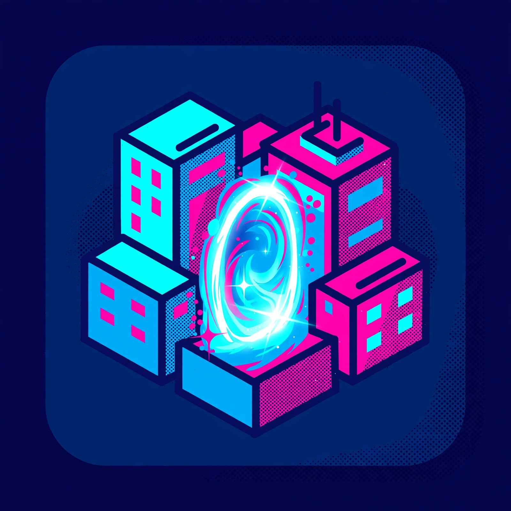
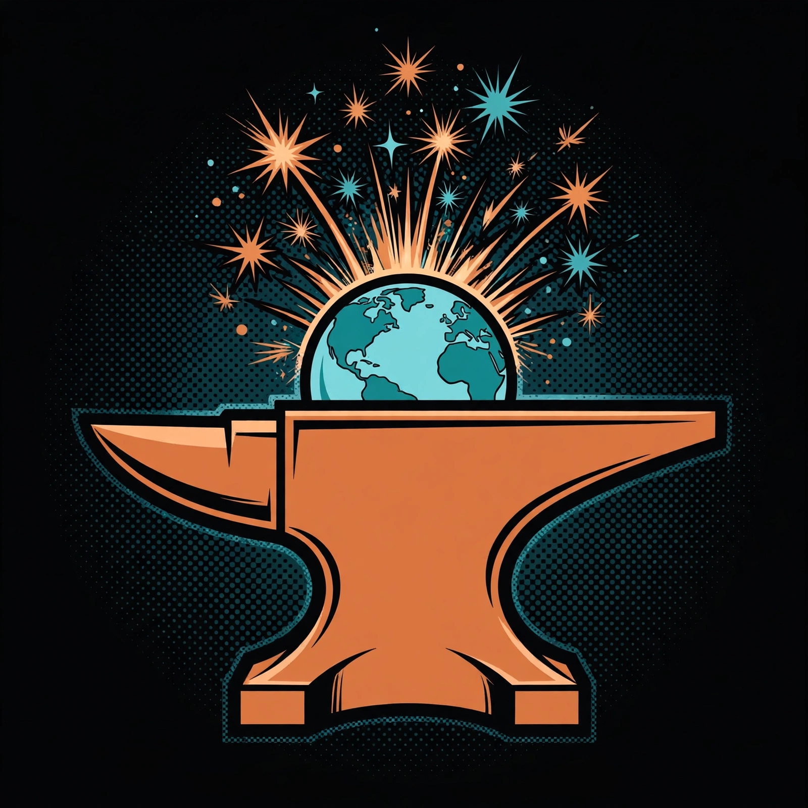

SmartCiti.X — Learn the city by playing it, building it, and walking its worlds
SmartCiti.X is W3 LLC Series 10 — listed as S10 SmartCiti.X in the W3 LLC internal series list (April 2026). It is the home of the WorldForge worlds project — 41 worlds in the public WorldForge-Browser build — and of the Smart Citi game: 939 Master Cards across 41 worlds, with all 41 quest worlds verified winnable in the local build. The game is not minted and not for sale. Start with the worlds, play the game, then train in TradeQuest: paste a job posting and get your next three skills, work a trade module station by station, and step into the Holodeck.



TradeQuest learner app
Paste a job posting — trades, dental, or nonprofit — and TradeQuest maps it to a sequenced skill graph across the SmartCiti.X strands, shows your next three skills, and coaches the gaps in order. Ten training environments, thirteen sessions, and the Scout / Mapper / Coach agent flow.
The full learner build, renamed from TradePath to TradeQuest (2026-11-10) — same app, current name.
Open the learner appTradeQuest union modules
Ten modular, self-contained training environments. Each module is one trade scenario — objectives, three stations, five interactive steps with a check for each, and a completion state that is saved on your device.
Start with Safety Procedures, then the trade modules: electrical, HVAC, hazmat & abatement, operating engineers, carpenters, and laborers.
Open the modulesCohort dashboard (demo)
How a cohort's progress reads once learners run the modules: strand, tier, and source filters over the LearnerProgressEvent contract. Every figure on that page is computed from the bundled sample log — twenty anonymised events, no real learners.
Open the dashboard demoVR entry & the Holodeck
The learner VR entry: skill graph, Holodeck Coach, and the trade halls. The IWSDK Training Centre is bundled too — ten procedural 3D zones on the shared 36×24 shell, no downloaded assets.
Open the VR entry Open the Holodeck (IWSDK)The worlds — WorldForge & RP1 pipeline
SmartCiti.X is one world among the anchored WorldForge set. Walk the full Earth view in the browser today, or inspect the live fabric host that feeds the RP1 attach pipeline (the Holodeck scene descriptor is served there now; the in-RP1 attach completes once the public map service deploys). No worlds are live in RP1 yet.
WorldForge — Earth view (all worlds) The 41 worlds — index Holodeck fabric (live host)Play the game — Smart Citi
The Smart Citi game turns the 41 WorldForge worlds into a card quest: 939 Master Cards across 41 worlds, built from the WorldForge cards. All 41 quest worlds were verified winnable in the local build (V1.1, verified locally).
The game is not minted and not for sale. That line stays true wherever the game is mentioned.
Rarity on the cards (Mythic, Legendary, Epic, Rare, Uncommon, Common) is designed rarity set at design time — it is labelled as designed, not drawn from play or sales data.
Play the Smart Citi game How to playStep inside — Holodeck, VR entry, and WorldForge
No SmartCiti.X film is embedded on this page. The way in is the site's own media surfaces: the bundled Holodeck scene, the learner VR entry, and the WorldForge VR entry at www.agi.lease.
Open the Holodeck (IWSDK) Open the VR entry WorldForge VR entry — www.agi.lease
RP1 status, stated wherever RP1 is mentioned: RP1 CompanyId 130 is confirmed; the public fabric URL waits on a VPS deploy. No worlds are live in RP1 yet.
Library — coming as a staged page
The SmartCiti.X reading room will collect B2 The TradeQuest Handbook, the TradeQuest materials, and the SmartCiti film and world archive. Every book in this programme is manuscript-complete — not published — and the library page will say so plainly.
Store — waitlist mode
The SmartCiti.X store will list B2 The TradeQuest Handbook (print + ebook), TradeQuest sim cohort seats, and SmartCiti.X swag — as a catalogue with waitlist capture only.
Enrollment opens when checkout is live. Joining the waitlist costs nothing and holds your place in line — it is not a purchase, and no payment will be taken until the enrollment page says so in plain words.
The skill graph — eleven strands
Every module, session, and posting maps onto the same SmartCiti.X strand structure, so a skill earned in one environment counts in the next:
coordinationdocumentationinspectionlayoutleadershipmachinesmaterialsproceduresafetytoolstroubleshooting
Module catalog
| Module | For | Runs in |
|---|---|---|
| Safety procedures — hazards, PPE, fit, report | All learners, first | Module runner |
| Union trades — electrical: panel & conduit install | Electrical learners | Module runner + Holodeck zone |
| Union trades — HVAC: diagnose, braze & commission | HVAC learners | Module runner + Holodeck zone |
| Union trades — laborers: hazmat awareness & abatement support | Laborers — hazmat/abatement | Module runner |
| Union trades — operating engineers: crane & lift simulator | Operating engineers | Module runner |
| Union trades — carpenters: layout & wall framing | Carpenters | Module runner |
| Union trades — laborers: site prep & material handling | Laborers — site work | Module runner |
| Robotics — human-robot integration in a shared cell | Robotics learners | Module runner |
| K-12 AR/VR foundations — measure, tools, safety | K-12 learners | Module runner |
| Outreach — prevention & school screening | Outreach learners | Module runner + Holodeck zone |
The hazmat/abatement, operating-engineer, carpenter, and laborer modules are new in this polish pass, written to the same standard as the electrical and HVAC modules and aligned to how the real training centres teach — the Laborers' Training Center of Northern California's hazmat/abatement catalogue, IUOE's simulator rooms, and Nor Cal Carpenters Training. Alignment references only: none of these organisations is a partner, and nothing here is their curriculum.